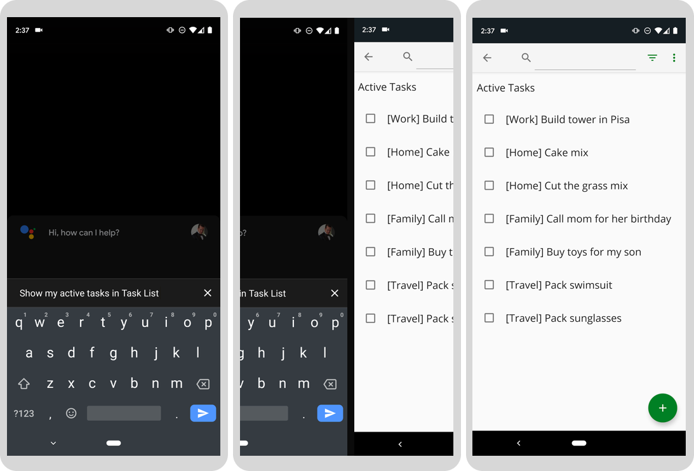
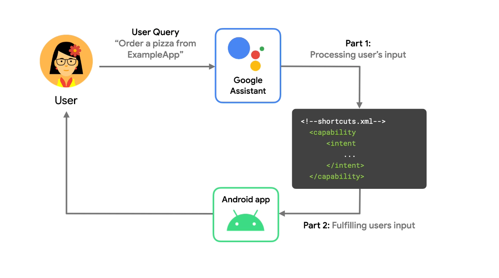

App Actionsを使用すると、ユーザーは Google アシスタントから特定のアプリ機能を直接起動して、Android アプリの範囲を拡大できます。 Android デベロッパーは Capabilities を実装できます。これにより、ユーザーが利用できる機能のタイプと、これらのリクエストをどのように処理したいかを Google アシスタントに知らせることができます。
最初の App Actions コードラボ では、 組み込みインテント (BII) の健康とフィットネスを実装することにより、Google アシスタントをサンプル フィットネス アプリに拡張する方法を学びました。 BII は、ユーザーがアシスタントに実行を依頼することが多いタスクの種類を表すカテゴリに編成されます。
このコードラボでは、「Common BII カテゴリ」の BII を使用してアプリにApp Actionsを追加する方法を学習します。これは、ほぼすべての Android アプリが実行できる一般的なアプリ タスクを表します。
このコードラボでは、App Actionsを使用して開発するための中級レベルの概念について説明します。 Android アプリの開発と Android インテントの実装の経験が必要です。
このコードラボでは、2 つの Common BII をサンプルの To-do リスト アプリに追加して、ユーザーがアシスタントに次のことを行えるようにします。
actions.intent.OPEN_APP_FEATURE BII を使用して、アプリ内の機能に移動します。actions.intent.GET_THING BII でアプリ内検索を使用してコンテンツを検索します。
Figure. Google アシスタントがアプリでアクティブなタスクを表示する 3 つのプログレッシブ画面。
Common カテゴリ BII を使用して、アシスタントをほとんどの Android アプリに拡張する方法を学習します。また、Android Studio 用の Google Assistant plugin を使用して一般的な BII をテストする方法も学習します。
この Codelab では、Android デバイス (物理または仮想) を使用してアクションをテストします。物理デバイスを使用している場合は、それがローカル開発マシンに接続されていることを確認してください。また、同じ Google アカウントを使用して、デバイスで Google アプリにサインイン し、Android Studio にサインインする必要があります。また、デバイスには Google アシスタント アプリ がインストールされている必要があります。
App Actions は、ユーザーを Google アシスタントから Android アプリに接続します。しかし、それらどのように機能しますか？
ユーザーがアシスタントにアプリの使用を指示すると、アシスタントはアプリに登録されている App Actions を shortcuts.xml ファイルから探します。このファイルには、アシスタントの組み込みインテントまたはカスタム インテントを Android インテントまたはディープ リンクにリンクするアプリの機能が含まれています。
ユーザーがアシスタントにクエリを発すると、アシスタントはユーザーの入力を解析し、App Actions インテントと照合します (このコードラボでは、BII になります)。アシスタントは、Android アプリの shortcuts.xml ファイルからサポートされている機能を認識しています。インテントが一致すると、その BII の機能には、そのリクエストをどのように遂行したいかが含まれます。このコードラボでは、フルフィルメントはアプリでアクティビティを起動する Android インテントです。
次の図は、このアシスタント フローを示しています。

Figure 2. Google アシスタントが音声クエリを処理する方法を説明するフロー。
shortcuts.xml プロジェクト ファイルには、App Action ごとに次の情報が含まれています。
次に、Android アクティビティは、提供された Android インテントまたはディープ リンクをフィルタリングして処理し、ユーザーに必要な機能を提供します。その結果、アシスタントがユーザーのクエリに応答してアプリの機能を呼び出すというユーザー エクスペリエンスが実現します。
このコードラボでは、Android 用の To-do リスト サンプル アプリを使用します。このサンプル アプリでは、To Do リストにアイテムを追加したり、カテゴリでアイテムを検索したり、完了したタスクに関する情報を表示したりできます。
次のコマンドを実行して、サンプル アプリの GitHub リポジトリ を複製します。
git clone --branch codelab-start-beta https://github.com/actions-on-google/appactions-common-biis-kotlin.git
リポジトリのクローンを作成したら、次の手順に従って Android Studio で開きます。
完成したコードラボを表すアプリのバージョンを確認するには、 --branch master フラグを使用してサンプル アプリ リポジトリを複製します。
このコードラボの後半では、Google Assistant plugin を使用して、物理デバイスまたは仮想デバイスでのアクションをテストします。テスト ツールを実行するには、まずアプリを Google Play Console のプロジェクトにアップロードする必要があります。アプリを Play Console にアップロードする際の「パッケージ名の重複」エラーを回避するには、サンプル アプリの applicationId を一意のものに変更します (Google Play では、同じ applicationId を持つ 2 つのアプリをアップロードすることはできません)。
app/build.gradle で、applicationId 'com.example.myapp' の値を 'com.codelabs.myname' などの一意の ID に更新します。 applicationId の詳細については、Set the application ID を参照してください。次のスニペットは、更新された applicationId を示しています。
bundle.gradleandroid {
...
defaultConfig {
// This ID uniquely identifies your app on the device and in Google Play Store
applicationId "com.example.myapp"
...
}
}アプリにさらに変更を加える前に、サンプル アプリで何ができるかを理解しておくと役立ちます。エミュレーターでアプリを実行するには、次の手順に従います。
Android 仮想デバイスの詳細については、 Create and manage virtual devices を参照してください。
Figure 3. To-do リストのサンプル アプリを示すアニメーション。
アプリを簡単に調べて、何ができるかを確認します。プラス アイコンをタップすると、新しいタスク アイテムが作成され、右上のメニュー アイテムを使用して、タスク アイテムを完了ステータスで検索およびフィルタリングできます。
アプリを Google Play Console のプロジェクトにアップロードすることは、Android Studio で Google Assisant plugin を使用するための前提条件です。 Android Studio でアプリをビルドし、内部リリース ドラフトとして Play Console にアップロードします。
Google Play Console で、次の手順に従って、作成したばかりの App Bundle を新しいアプリとしてアップロードします。
app/prod/release ディレクトリにあるでしょう）。Save をクリックします。Google Assistant plugin を使用すると、テスト デバイスでApp Actionsをテストできます。テスト ツールがまだない場合は、次の手順に従ってインストールします。
actions.intent.GET_THING BII は、アプリ内検索機能を Google アシスタントに拡張します。このステップでは、GET_THING BII を実装してテストし、ユーザーがサンプル アプリで特定のタスクを検索できるようにします。
検索関連のApp Actionsの最中に、アシスタントはユーザー クエリから検索語を抽出して thing.name BII パラメータに入れ、その値を Android アプリケーションに渡します。
GET_THING BII をアプリに追加するには、app/src/main/res/xml サンプル プロジェクト ディレクトリにある shortcuts.xml を更新し、最上位の
<shortcuts ....>
<capability android:name="actions.intent.GET_THING">
<intent
android:action="android.intent.action.VIEW"
android:targetPackage="com.yourApplicationId.appaction"
android:targetClass="com.example.android.architecture.blueprints.todoapp.tasks.TasksActivity">
<parameter
android:name="thing.name"
android:key="q"/>
</intent>
</capability>
</shortcuts>上記の設定内容は、以下となります。
GET_THING BII に応答することを宣言します。targetPackage と targetClass を使用して識別されます。thing.name は、q という名前のインテント エクストラにマップされます。名前付きアクティビティは、アプリのマニフェストに存在し、エクスポートされている必要があります。
提供された Android アプリケーションにはメタデータが含まれているため、AndroidManifest はshortcuts.xml ファイルを認識します。
<meta-data
android:name="android.app.shortcuts"
android:resource="@xml/shortcuts" />アシスタントからあなたのアプリにてアプリ内検索をテストするために、以下の手順に従います。
actions.intent.GET_THING を選択します。name の値を running shoes から milk に変更します。このテストでは、GET_THING BII は name 属性を使用して、「milk」を含むタスクのアプリを検索します。前のApp Actionと同様に、テスト ツールを使用してアクションをテストするか、テスト デバイスで「Hey Google, search for cake mix in Task List」などの検索フレーズを発声するだけです。
このステップでは、Open app feature BII を実装し、ユーザーがアシスタントを使用してアクティブなタスクと完了したタスクを表示できるようにします。これを行うには、capalibity がトリガーされる方法、パラメーターが渡される方法、および呼び出す Android インテントに関する情報を含む shortcuts.xml の capability を完成させます。このコードラボでは、OPEN_APP_FEATURE BII を使用します。この BII を実装したら、デバイスでアクションをテストします。
Get Thing Capability 要素の下に、shortcuts.xml 内で Open app 機能のための2番目の capability を追加します。
<capability android:name="actions.intent.OPEN_APP_FEATURE">
<intent
android:action="android.intent.action.VIEW"
android:targetPackage="yourApplicationId"
android:targetClass="com.example.android.architecture.blueprints.todoapp.tasks.TasksActivity">
<parameter
android:name="feature"
android:key="feature"/>
</intent>
</capability>この capability は、Open app 機能の BII と Android インテントを一緒にマップするため、Open app 機能がトリガーされると、Android インテントがトリガーされます。
Android インテントをトリガーする前に、サポートされているパラメーターがユーザーの入力から引き出されます。 OPEN_APP_FEATURE BII は、ユーザー クエリから抽出されたアプリの機能を表す 1 つのパラメーター feature をサポートします。このアプリケーションがサポートする機能には、アクティブなタスクと完了したタスクの 2 つのタイプがあります。これらの機能により、ユーザーはタスクのリストのフィルター処理されたビューでアプリを開くことができます。これらの機能をサポートするには、inline inventory を使用する必要があります。
インテント パラメーターは、ユーザー クエリから抽出された要素を表します。たとえば、ユーザーが「Hey Google, order a pizza from ExampleApp」のように言うと、アシスタントは「pizza」を food.item schema.org インテント パラメータに抽出し、そのパラメータをアクションに渡して処理します。
Open app feature BII は、ユーザー クエリから抽出されたアプリ機能を表す 1 つのパラメーター feature をサポートします。このパラメータには インライン インベントリ が必要です。これにより、アシスタントはパラメータ値と一致する一連のサポートされているアプリ機能名を提供します。
feature インテント パラメーターを処理するには、Open app feature capability の上に、次のコードを使用して、shortcuts.xml にショートカットを追加します。
<shortcut
android:shortcutId="active_tasks"
android:shortcutShortLabel="@string/label_active"
android:enabled="false">
<capability-binding
android:key="actions.intent.OPEN_APP_FEATURE">
<parameter-binding
android:key="feature"
android:value="@array/active_tasks_synonyms" />
</capability-binding>
</shortcut>
<shortcut
android:shortcutId="completed_tasks"
android:shortcutShortLabel="@string/label_completed"
android:enabled="false">
<capability-binding
android:key="actions.intent.OPEN_APP_FEATURE">
<parameter-binding
android:key="feature"
android:value="@array/completed_tasks_synonyms" />
</capability-binding>
</shortcut>上記のコードでは、capability とパラメーターのバインドを持つ shortcut 要素として表されるインライン インベントリを定義しました。ショートカットは、BII パラメータのインベントリとして使用できます。 Google アシスタントは、ユーザー クエリを Shortcuts のパラメーター バインディングの値と照合します。一致するパラメーター値の場合、shortcutId がフルフィルメント インテントに追加されます。ユーザーがリクエストで OPEN_APP_FEATURE BII をアクティブ化すると、アシスタントは feature パラメータ値をショートカットの値属性と照合し、その値を Extra の parameter として targetClass に渡します。
たとえば、ユーザーが「Hey Google, show my completed tasks in ExampleApp」のように言うと、アシスタントは feature インテントのパラメーター値「completed tasks」を対応するインベントリ ショートカットと照合し、その値を OPEN_APP_FEATURE capability に渡します。その後、アシスタントは Android インテントをトリガーします。
開発およびテスト中に、Google Assistant plugin を使用して、テスト デバイスでアシスタントを使用したApp Actionをプレビューします。また、このツールを使用してApp Actionのインテント パラメーターを調整し、ユーザーがアシスタントに実行を依頼するさまざまな方法をアクションがどのように処理するかをテストすることもできます。
テスト ツールを使用してアプリ アクションをテストするには、次の手順に従います。
actions.intent.OPEN_APP_FEATURE を選択します。History 値を Completed tasks に更新します。別の方法として、デバイスのアシスタント アプリで呼び出し名を直接使用して、App Actionを試すことができます。たとえば、「Hey Google, show completed tasks in Task List」と言うことができます。
おめでとうございます！
Common BII を使用して、ほぼすべての Android アプリを Google アシスタントと連携させることができるようになりました。
What we've covered
このコードラボで、あなたは以下を学びました。
What's next
ここから、To-do リスト アプリにさらに改良を加えることができます。完成したプロジェクトを参照するには、GitHub の repo – master branch を参照してください。
App Actions を使用してこのアプリを拡張する方法についてさらに学習するための提案を次に示します。
Actions on Google の旅を続けるために、これらのリソースを探検してください。
Twitter @ActionsOnGoogle でフォローして最新の発表をチェックし、#AoGDevs にツイートしてあなたが構築したものを共有してください。
Feedback survey
最後に、この アンケート に記入して、このコードラボでの体験についてフィードバックをお寄せください。